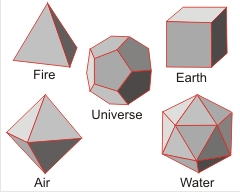

'I am the wisest man alive, for I know one thing, and that is that I know nothing'
Plato, ≈ 380 BC, The Republic
Plato assumed these shapes corresponded to the properties given. In particular, he associated icosahedra with water (as I do on this website).a An understanding of the Platonic solids is required throughout chemistry [4059]. They are the only regular solids where all the vertices and the centers of all the faces and edges lie on spheres (the circumscribed, inscribed, and mid spheres, respectively) with the same center.
The properties of these solids, with edge length (el ), are given in the following table:
Name |
Coordinates, el [444] |
Dihedral angle (θ) d |
tan(θ/2) | Vertex-center-vertex angle d | Vertex angle d |
|---|---|---|---|---|---|
(-½√½,½√½,½√½)(½√½,-½√½,½√½) |
70.529° | 1/√2 | 109.471° | 60° | |
(±½, ±½, ±½) |
90.000° | 1 | 70.529° | 90° | |
(±√½, 0, 0)(0, ±√½, 0)(0, 0, ±√½) |
109.471° | √2 | 90.000° | 60°, 90° | |
(0, ±½,
±½(1+φ))(±½(1+φ),
0, ±½) |
116.565° | φ | 41.810° | 108° | |
(±½, 0, ±φ/2)(±φ/2, ±½, 0)(0, ±φ/2, ±½) |
138.190° | φ2 | 63.435° | 60°,108° |
where φ (phi) is the golden ratio. A rectangle with sides in the ratio 1:φ gives a similar rectangle when the square side 1 is removed (see right):
φ = (√5+1)/2 = 2 ˣ cos(π/5) = 1.618 033 988....
1/φ = φ - 1= (√5-1)/2
= 0.618 033 988....
φ2 = φ + 1= (√5+3)/2
= 2.618 033 988...
where the fractional numbers after the decimal point have no pattern and are identical. It is known to at least a trillion places.
Also,
φn+1 = φn + φn-1
and,
φ is the limit of the ratio of consecutive Fibonacci numbers, formed by adding the previous two numbers, e starting 1 1 as
1 1 2 3 5 8 13 21 34 55 89 144 233 377 610 987 1597 2584 4181 6765 10946 17711 28657 .........
Thus,
5/3 = 1.60
89/55 = 1.6182
2584/1597 = 1.618 034
28657/17711 = 1.618 033 99
The ratios get closer and closer to φ but are never exactly φ, which is an irrational number. The golden ratio occurs in the dimensions of the pentamers of water molecules that are commonly found in liquid water and the water icosahedra described at this site.
Dodecahedron showing the three mutually
perpendicular rectangles between the faces
Water pentamer
Thus the ratio of the distances between the next to nearest-neighbor water molecules (a) and the nearest-neighbor water molecules (b) in planar water hydrogen-bonded pentamers (H2O)5 (see a/b left) is
a/b =
2 ˣ sin(108°/2) = φ
= (√5+1)/2
Also, these diagonals intersect each other in the golden ratio with b/c = φ and c/d = φ. The internal diagonals form a pentagram.
The three mutually perpendicular rectangles formed by connecting the pentagonal face centers in dodecahedra (see above right) have sides with lengths in the ratio of the golden ratio.
Interestingly the golden ratio also appears in aqueous chemistry as the ratio between atomic and ionic diameters. Thus the diameter of an anion (A−) is twice its atomic diameter divided by φ, and the diameter of a cation (A+) is twice its atomic diameter divided by φ2; with the diameter of A− being the golden ratio times the diameter of A+, and simple functions of φ also relating ion-water distances to covalent radii [1091]. The golden ratio has also been associated with the genetic code [1808].
Plato would not have been wrong to connect liquid structure in general to icosahedra as spherical atoms and molecules (for example, the larger noble gases) in the liquid phase prefer icosahedral clustering, which has a lower energy than crystal structures (but cannot form crystals due to the five-fold symmetry).
The 13-molecule cluster of argon atoms
Shown right is an icosahedral cluster of thirteen identical spherical atoms b as found in liquid argon, krypton, xenon, and molten metals. Such five-fold symmetry is optimal for short-range close packing but incompatible with long-range order and favoring amorphous structures. Its preferred formation has been shown to prevent crystallization in liquid metal melts and be the cause of their extensive supercooling [505].
It is clear
from the evidence
presented at this site that water
may form icosahedral clusters,
so linking modern science with ancient philosophy.
Connectivity graph of the proposed (H2O)280
On the right is the connectivity graph, and below is a Java applet c showing the solid shape of the proposed water icosahedral cluster (H2O)280. It is a truncated icosahedron with 60 vertices (dark blue dots). 120 edges, 12 (blue) pentagon faces (with edge length el ≈ 0.28 nm), 20 equilateral triangular faces (red with edge length 4 ˣ (2/3)½ ˣ el, water molecules at vertices and on each edge) and 30 (blue and red) rectangular faces (with edge lengths el (blue) and 4 ˣ (2/3)½ ˣ el (red)). (Note that 4 ˣ (2/3)½ is 3.266 and close to the value of 2φ; =3.236).
(H2O)280 as a polygon
a The association of the dodecahedron with the Universe has also received a burst of interest, now somewhat subsiding [1163]. [Back]
13-atom cuboctahedron
b One atom resides in the slightly too small cavity at the center, causing loose contact between the twelve at the vertices. Note that thirteen atoms can only fit snugly together in a cuboctahedron (with 8 triangular and 6 square faces) formed from three layers containing 3, 7, and 3 atoms and part of a hexagonal close-packed arrangement. Such a structure (see right) is generally found to be at higher energy than the icosahedral cluster but is found in crystalline H2 S (with weaker hydrogen bonding than H2O). [Back]
c This uses a non-commercial Java 1.1 applet by Martin Kraus. Use the mouse to rotate the structure. [Back]
d The dihedral angle is the interior angle between any two meeting face planes. The vertex angle is the angle formed by two meeting edges, and the vertex-center-vertex angle with both vertices of the same edge. [Back]
e Any two numbers may be used, e.g., 9 and 3
9 3 12 15 27 42 69 111 180 291 471 762 1233 1995 3228 5223 8451 13674 22125 35799 57924 93723 151647
151647/93723 = 1.618034.... ≅ f
[Back]
Home | Site Index | Platonic solids (java) | Abstract | LSBU | Top
This page was established in 2002 and last updated by Martin Chaplin on 23 October, 2021